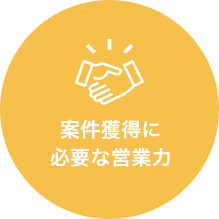
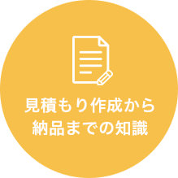
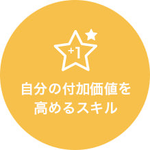
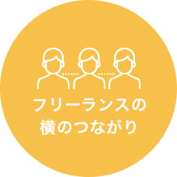
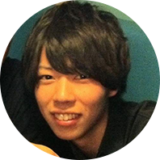
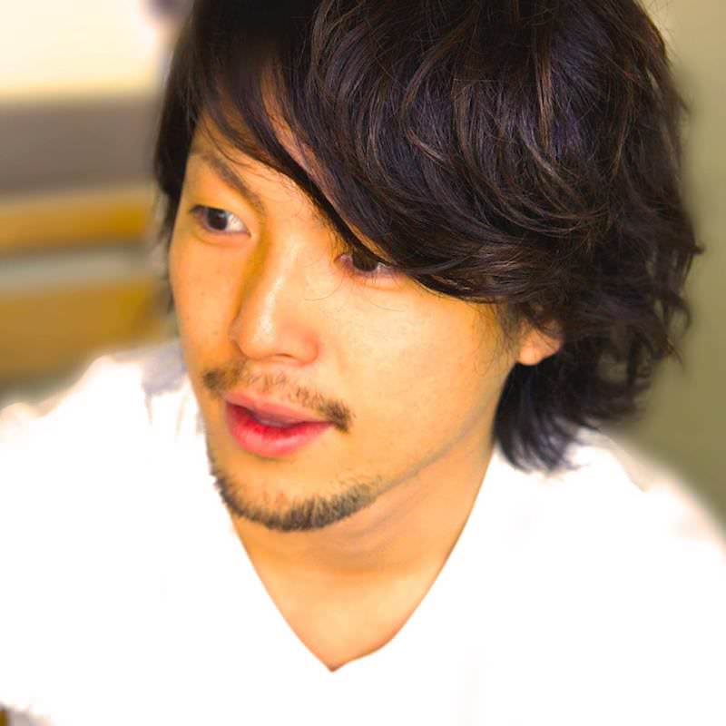
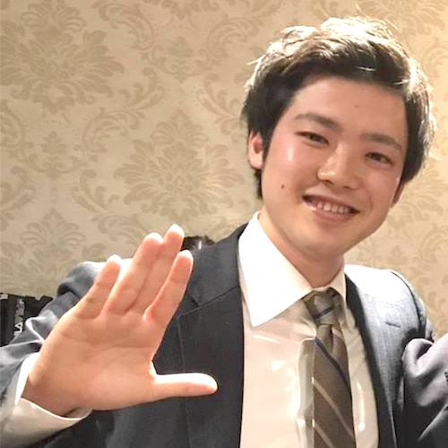
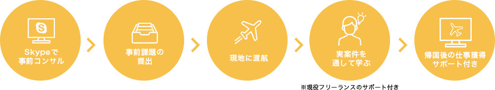

プログラミングで
人生の安定を手にいれよう

バンコクのノマドエンジニア育成講座 iSara[イサラ]
まずは２０日間で、
月１０万円稼げるスキルを手にいれよう。
※受講料金は実質０円です。詳しくは資料請求をどうぞ。
- 第６期生：2019年11月25日 ~ 2019年12月14日＊締め切りました
- 第７期生：2020年2月17日 ~ 2020年3月7日＊締め切りました
- 第8期生：次回の募集は未定です
エンジニアとして本当の自由を手に入れるためには？
エンジニア需要の高まりに伴い、プログラミングスクールが増えています。
しかしそこでの学習の先は、
提携して決められた就職先に就職すること。
これで本当にいいのですか？
日本人エンジニアはアメリカと較べて給料が格段に低い。
その理由がここにあり、エンジニアは自分の給料をコントロールすべきなのです。
スキルを身につけたエンジニアは、人生をコントロールすることでより自由に。
そこで必要なのが 「稼ぐ力」です。
ノマドエンジニア育成講座
iSara[イサラ]とは
「 稼ぐこと」にフォーカスしたWebエンジニア育成講座です。
稼げるエンジニアに必要な５つのスキルとは？
基礎的な
プログラミングスキル
案件獲得に必要な
営業力
見積もり作成から
納品までの知識
自分の付加価値を
高めるスキル
フリーランス同士の
横のつながり
iSaraで「基本的なプログラミングスキル」は教えません
基礎的なプログラミングスキルは無料で学べる時代。
iSaraでは、基礎知識学習は事前課題とチャットサポートのみ。
【バンコク渡航前１ヶ月】
事前課題で基礎知識を学ぶ
【バンコク到着後】
実践的に稼ぐことに特化した学習
【バンコク帰国後】
講座実施後の案件獲得サポート
スキルアップしてもフリーランスエンジニアとして食べていくことは難しい。
フリーランスには プログラミングスキル以外が大切。
iSara[イサラ]で学べること
iSaraの学習では、エンジニアとして「稼ぐ」ために必要な能力を身につけます。




これらを教えるのがiSaraです。
他のプログラミングスクールとここが違う！
iSara[イサラ]の３つのメリット
現役フリーランスから学べる
他のプログラミングスクールとは違い、実際にフリーランスとして活動しているエンジニアが直接講師を勤めます。
実践を通じて学べる
フリーランスにとって最短の学習方法は「実践」。iSaraでは実案件を通して学びます。現役フリーランサーの案件サポートに加え、クラウドソーシングを活用。初心者の自分じゃ無理と思うかもですが、現役フリーランスがサポートしますので大丈夫。
授業料が実質０円
講座費用258,000円以上の金額が稼げるまで「永久サポート延長」があります。
さらに！帰国後もサポート付き
リモートワーカーのチームを作ることで受注率、受注単価が大幅に向上します。
iSaraは講座が終わって終了ではありません。
参加メンバーのチャットグループを作り、帰国後も継続的に案件参加できるようになります。
また、チームで働くことで継続的に稼ぎやすい仕組みづくりも構築しております。
事前課題ができない人はお断りしております。iSaraでは、無料で学べるプログラミング基礎知識は教えません。事前課題一覧はメールで送りつつ、チャットサポートのみ。従って、本気で取り組まないと結果は出ません。
創業メンバー
実際にフリーランスとして活躍しているエンジニアが立ち上げました
フリーランス講師
染谷 佳佑
ISARA(THAILAND)CO.,LTD.の代表です。学生起業の後にリクルートへ就職、その後独立し、海外移住しました。今はフリーランスとしてリモートワークで日本円を稼ぎ、外国通貨に変えて使い、海外を旅してます。営業、ブログPVアップ(最高月間150万PV)、ビジネス構築が専門です。
フリーランス講師
成田 雄輝
バンコクのシェアハウスのオーナーをやりながら一年の大半をタイで過ごしています。大学時代から今に至るまでネットだけで生計を立てているので、自由歴だけは講師陣の中で最長です！母親がタイ人という事もありタイには精通してますので、こちらでの生活のサポートはお任せください！

フリーランスエンジニア
アドバイザーとして参画しました。新卒で海外就職して１１ヶ月後に退職。今は日本にいたり海外にいたりでゆるくフリーランスをしています。
お仕事はWebマーケティングとプログラミングが専門領域です。
Q&A
ノマドエンジニアとして自由に稼ぐことは
「 本当に 」可能なのか？
実現可能です
その証拠に第三者の声を聞いてみました。
＊実際にフリーランスエンジニアを採用する企業様から、メッセージをいただきました。

リモートワークという言葉がありますが、弊社では何も気にしません。エンジニアに求めるのは、快適なコミュニケーションと信頼と成果物のみ。
Kredo IT Abroad . Inc 代表取締役 横田 猛夫

社内でスキルのある人材を採用するのは難しい。外部パートナーとして継続的に依頼できるフリーランスには助かっています。
SAPEUR . Inc 代表取締役 佐藤 陽
プログラマーが足りていないときに外部リソースとして、フリーランスに発注しています。今はどこの会社でもエンジニアが不足していますね。
株式会社BeautifulWorks 代表取締役
iSara[イサラ]で学べる内容
渡航前の事前課題と渡航中に学べることの一覧です。
渡航前の事前学習
- ０から始めるプログラミング事前学習講座
- 参加者グループコミュニティ
- チャットサポート
- 事前スカイプコンサル
- 環境構築の事前学習
- jQueryの事前学習講座
- Bootstrapの事前講座
- PHP / Mysqlの事前学習講座
- 稼ぐためのHTML/CSS講座
- WordPressの事前学習講座
バンコク渡航中
- フリーランス独立術講座
- 実際の実務案件をこなす
- ノマドフリーランス体験
- バンコク生活体験
- クラウドソーシング活用講座
- フリーランスのための営業講座
講座費用258,000円以上の金額が稼げるまで「永久サポート延長」します。
つまりリスク０で参加できます。
受講の流れ

Skypeで
事前コンサル
現在のスキルの状況、パソコンの環境説明、渡航での注意点を話します。
簡単なテストあり
iSaraでは受講料を稼げることを保障しています。従って、事前コンサル時点で簡単なテストを実施し、場合によってはお断りをしております。（テストの内容はPCの基礎知識に関するテストですので、普段からパソコンを利用する方でしたら問題ありません。テストはもちろん無料ですので、まずはお問い合わせください。）
事前課題の提出
出発前の１ヶ月前に事前課題を送ります。
０から始めるプログラミング事前学習講座、環境構築の事前学習、jQueryの事前学習講座、Bootstrapの事前学習講座、PHP / Mysqlの事前講座
課題は多いですが、ここで努力が必須です。プログラミングは高付加価値なスキルです。そのためには学習が必須です。回数無制限のチャットサポート付きですので、最初は努力してください。
また、参加者グループコミュニティも作成するので、横の繋がりでモチベーションを高めることもできます。
現地に渡航
到着日には空港でお出迎えし、初日のオリエンテーションを行います。
滞在先は空港からすぐの出来たてシェアハウス。美味しいタイ料理などもご紹介します。
iSaraは『ノマド』フリーランス養成講座です。
楽しいノマド体験ができるよう、バンコクでの生活はこちらでサポートします。
実案件を
通して学ぶ
現役フリーランスが抱える案件に加え、クラウドソーシングを使って実案件をこなします。
案件獲得のためのメールの書き方や見積りの仕方など、
他のプログラミングスクールでは教えてくれない実務スキルを学ぶことができます。
＊現役フリーランスがサポートします。
帰国後の仕事獲得
サポート付き
経験年数の少ないフリーランスが高単価で継続的に仕事受注するコツ、それがチームを組むことです。
iSaraではフリーランスコミュニティを形成し、帰国後のエンジニアでも継続的に稼げる仕組みを提供します。
もちろん、個人で十分に稼げるようになった場合はいつでも脱退できますし、制限などは何もありません。
なぜバンコクなのか？
ここまで見ると、iSaraは日本でも実施可能に見えます。
しかし、バンコクを選んだのには理由があります。
- プログラミングフリーランスの最先端
- 水準は日本と同じなのに、生活費が安い（毎月８万円ほど）
- 昼、夜共に遊びが充実（稼ぐモチベーションアップと息抜きにGOOD）
- 日本人が住みやすい（食事が美味しい / 気候が良い / 親日である）
環境が大切。さらにこの価格が実現できるのが、バンコクなのです。
iSara受講生への参加特典
講座費用258,000円以上の金額が稼げるまでの「永久サポート延長」を追加します。つまり、実質０円です。
iSaraは『実質０円』！更なる特典もあります。
特典１
講座費用258,000円以上の金額が稼げるまで、「永久サポート延長」。リスク０で参加できます。
特典２
iSaraフリーランスコミュニティ参加権利。案件の紹介や、新施設OPENの際の優先利用権が受けられます。
特典３
講座参加後のシェアハウス利用権利（ドンムアン空港至近のため、とても便利です）
iSaraはボランティアではありません
ここまでみると、実質０円で各種サポートもある、特典が多すぎて逆に怪しい。
そう思われるかもしれません。
しかし、iSaraが目指すことは異なります。
月１０万円稼げるエンジニアを輩出し続ける。
最大の価値がこれです。
iSaraの卒業生が稼ぎ続けることで、小さな経済が動き始めます。
ここに最大の価値があり、この講座はその序章にすぎません。
創業者からのメッセージ
「一生もののスキル」を身につけ、ノマドライフを楽しもう！
・「Webエンジニアとして稼ぐ」に特化した超実践的カリキュラム
・フリーランスとして生計を立て、いつでも世界中を旅できるスキル、収入のある講師陣のみを厳選
・講座参加者が25万8,000円の参加費以上を稼ぐまでの無期限サポート延長
ここまでのカリキュラムを備えた講座は、世界で唯一iSaraだけでしょう。iSaraでプログラミングや営業を学ぶことで、「一生ものの潰しが効くスキル」が身につきます。もちろん勉強だけでなく、バンコクを楽しめるプログラムも用意しています！
３ヶ月間徹底的にサポートします。ぜひバンコクでお会いしましょう。
資料請求フォーム
まずは無料で資料請求からどうぞ。
現在は募集を停止しております🙇♂️